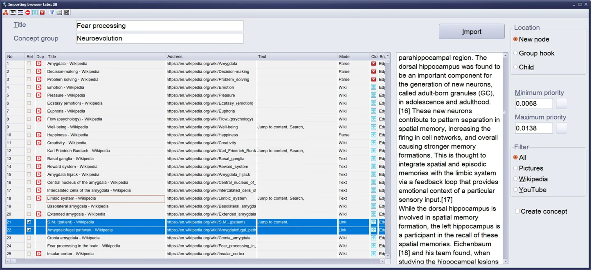
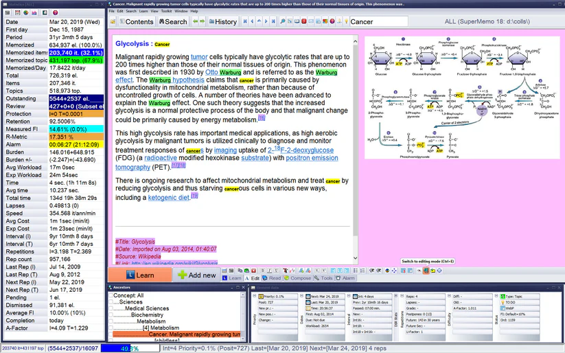
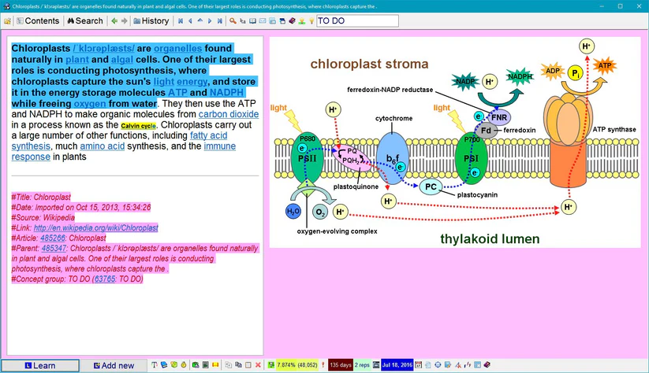

Featured Products
SuperMemo 19

SuperMemo 19 for Windows helps you import knowledge from the web, organize
it, and keep it in your memory at minimum cost for ever.
SuperMemo has been in development for 36 years now. SuperMemo is a tool based on best research
ideas that improve productivity and the efficiency of learning.
$25.00
SuperMemo 18

SuperMemo 18 is the version of SuperMemo that added the SM-18 algorithm. This new and improved
algorithm is even better at predicting memory.
$25.00
SuperMemo 17

SuperMemo 17 added the neural creativity function which allows you to make connections between
flashcards using links. It also improved on the old SM-15 algorithm by 5-10%, which is a lot in
terms of learning efficiency. This update also added a large range of new statistics and other
configurable parameters.
$25.00
SuperMemo Assistant
SuperMemo Assistant is a plugin or SuperMemo that allows the use of LaTeX and the importation of
PDFs. It merges directly with SuperMemo and allows for seamless integration.
$25.00
FAQ
What is SuperMemo?
- SuperMemo is a learning software that makes it possible to retain memories for a long period of time.
- SuperMemo is available as a computer program for Windows, and smartphones.
- SuperMemo is based on the science of long-term memory integrating the concepts of spaced repetition, active recall, and incremental reading.
Adapted from: Piotr Wozniak (creator of SuperMemo)
What is the fastest method to learn a language?
The fastest way to master a language is through the use of flashcard software like Anki
or
SuperMemo. To make learning a language easy, space out your learning through time and
focus
on testing yourself actively. This is best done through SuperMemo where each time your
encounter a new word, you can create a new flashcard to help you remember it.
Adapted from: Piotr Wozniak (creator of SuperMemo)
What is incremental reading?
Incremental reading is a learning technique that makes it possible to read thousands of
articles at the same time without getting lost. Incremental reading begins with
importing
articles from electronic sources, e.g. the Internet. The student then extracts the most
important fragments of individual articles for further review. Extracted fragments are
then
converted into questions and answers. These in turn become subject to systematic review
and
repetition that maximizes the long-term recall. The review process is handled by the
proven
spaced repetition algorithm known as the SuperMemo method.
Adapted from: Piotr Wozniak (creator of SuperMemo)
Where to learn more?
The best resources on SuperMemo, memory, learning, sleep, creativity, problem solving,
brain
science, health, and education come from
supermemo.guru